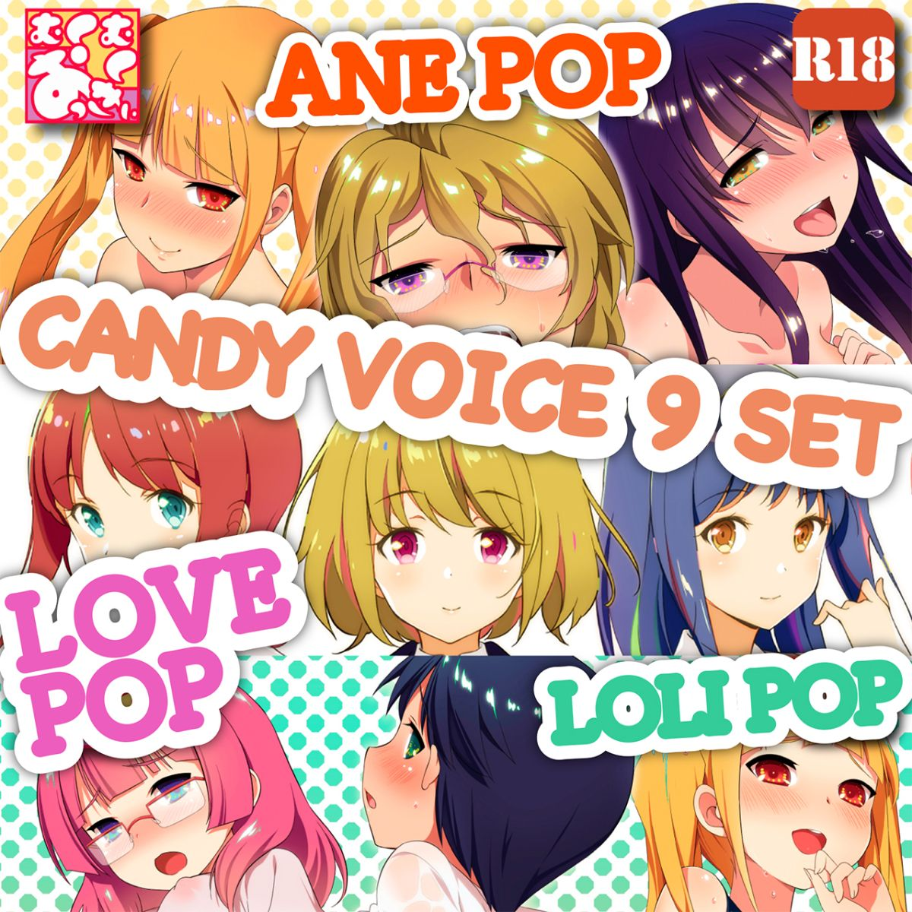
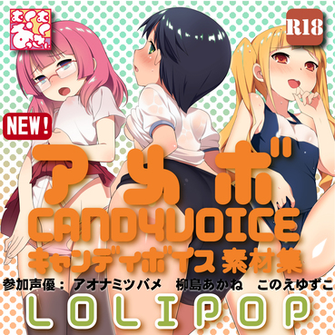

キャンディボイス音声素材集9キャラセット
キャンディボイスは１８禁音声素材集です。ゲームや、音声作品、アニメーションを制作する際に便利なモブ音声の素材集です。
共通テンプレートに従い収録されています。同じシチュエーションに対する異なるキャラクターのボイスを簡単に比較、検討できます。
このセットは、姉キャラ、ヒロインキャラ、○リキャラの各3、合計9キャラの詰め合わせセットになっています。

キャンディボイスは１８禁音声素材集です。ゲームや、音声作品、アニメーションを制作する際に便利なモブ音声の素材集です。
共通テンプレートに従い収録されています。同じシチュエーションに対する異なるキャラクターのボイスを簡単に比較、検討できます。
このセットは、姉キャラ、ヒロインキャラ、○リキャラの各3、合計9キャラの詰め合わせセットになっています。

このサイトとこの先の遷移は、１８歳以上の心身ともに健康なむくむくさんのためのサイトです。